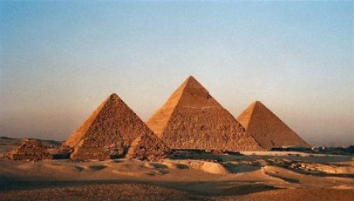

Maravilla en honor
Piramide de Guiza
Se consideró que la Gran Pirámide de Guiza (Egipto) sería la octava maravilla honorífica. La Gran Pirámide había sido excluida de la votación, por ser la más antigua y la única que aún perdura de las siete maravillas del mundo antiguo. El hecho se dio en el marco de una gran oposición de las autoridades culturales egipcias, tales como Zahi Hawass, secretario general del Consejo Superior de Antigüedades del gobierno egipcio (Ministro de Antigüedades hasta 2011), que calificó a este concurso de «operación publicitaria». Desde que se crearon hace más de 4000 años, las pirámides de Egipto han sido los más portentosos y emblemáticos monumentos de la civilización egipcia, así como la maravilla más antigua y única que se conserva, y en particular cabe destacar, las tres grandes pirámides de Giza, las tumbas de los reyes Keops, Kefrén y Micerino, cuya construcción se remonta, para la gran mayoría de estudiosos, al periodo denominado Imperio Antiguo de Egipto. La Gran Pirámide de Giza, construida por Keops, es actualmente, una de las siete Maravillas del Mundo. Otro destino a conocer, del periodo arcaico de Egipto, es La mastaba. Se trata de una construcción casi prismática, que servía de sepultura de los soberanos. Se cree que el paso de mastaba a pirámide, era por el deseo de alcanzar alturas cada vez más significativas para manifestar la importancia y el poder del difunto faraón. Erguidas sobre la arena del desierto, son algo más que un templo y una tumba a la gloria de un dios, porque en ellas también se realizaban complejos rituales de muerte y nacimiento.